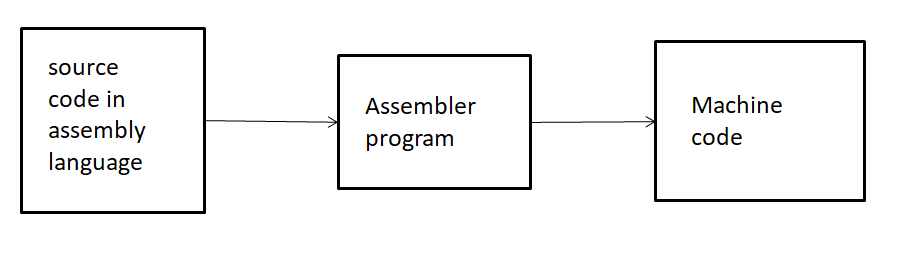

Like machine language, assembly language is a language of
programming specific to a microprocessor. It assigns a name to each instruction that a user can execute
microprocessor. This name is called mnemonic.
Assembly language is therefore very close to machine language. He's just doing a bijection between
mnemonics, understandable by humans, and binary codes, understandable by machines.
The machine language is only made of 0 and 1 understandable for the computers.
An assembly program is a computer program that translates assembly code into code
machine. This translation process is called assembly. There may be more than one program
different assemblers for the same assembly language (just as there are several C compilers
different for language C).

Once assembly is complete, the generated machine code can be loaded into memory and executed by a
microprocessor.